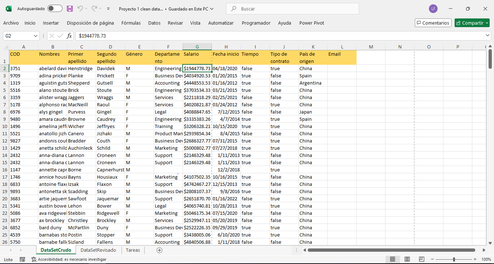
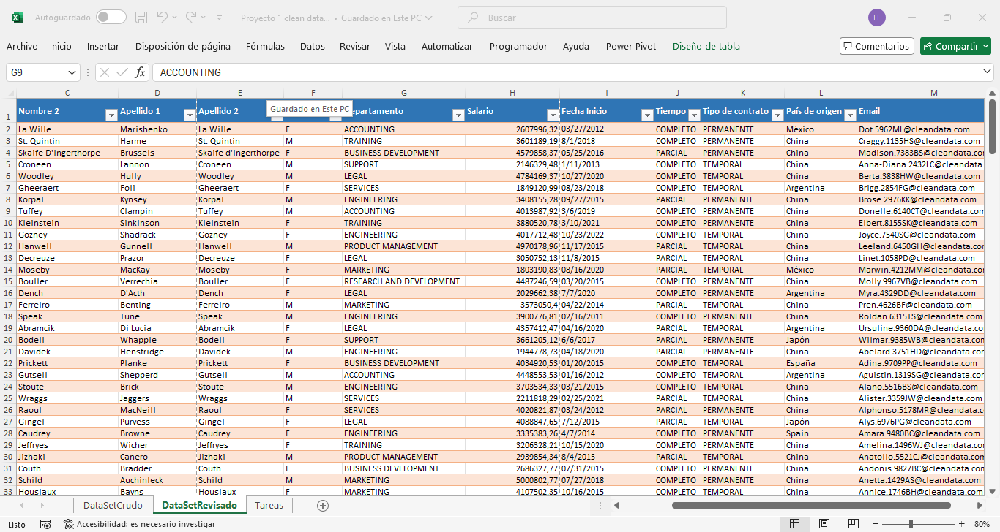

🧠 Sobre mí
Soy Luciano, vivo en Argentina y me estoy formando como analista de datos. Aplico mis conocimientos en proyectos reales con herramientas como Excel, SQL y Power BI. Me encanta encontrar soluciones prácticas, comunicar ideas y colaborar en equipo.
🛠️ Herramientas que manejo
- 📊 Excel ✓ Funciones, tablas dinámicas, automatización de informes
- 📈 Google Sheets ✓ Colaboración, dashboards simples, conexión con formularios
- 📉 Power BI ✓ Visualización, modelos de datos y KPIs
- 🗃️ SQL / SQLite ✓ Consultas, joins, análisis de datos
- ☁️ Google Drive ✓ Organización y trabajo en la nube
- 📝 Google Forms ✓ Encuestas conectadas a hojas de cálculo
📌 Proyectos destacados
🧼 Limpieza de datos con Excel
Transformación de un dataset con errores y datos duplicados en un conjunto listo para análisis.
  📥 Descargar Excel🏥 Análisis de traumatología en hospital público
Transformé una planilla manual con datos de pacientes, cirugías y obras sociales en un sistema automatizado con resúmenes claros mensuales mediante tablas dinámicas en Excel.

 🔗 Ver repositorio en GitHub
🔗 Ver repositorio en GitHub